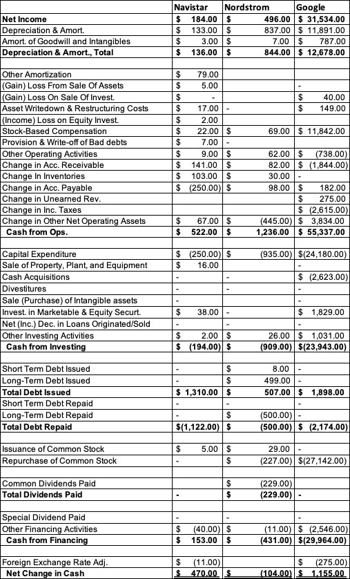

← 会计101 · 分讲阅读 · 站主随笔
NYU Stern · Damodaran《Accounting 101》· 第 4A 讲
本讲视频：Cash Flow Statement Comparisons（YouTube，约 12–20 分钟）· 原始幻灯：session4A.pdf
现金流量表也许是四张报表里最不容易被会计手法影响的一张——因为它讲的是真金白银的进出。但同一张表，在不同生命周期的公司身上会说完全不同的话：年轻公司的经营现金流为负是正常的，成熟公司的经营现金流为负就是警报；银行的经营现金流里装的是客户存款，Netflix 的经营现金流里装的是内容支出。先判断这家公司处在哪一段，再看它的现金流表。
这一讲是 Damodaran《Accounting 101》的第 4A 讲。和第 3A 讲一样，原课件几乎没有文字，全部内容是八家公司的现金流量表截图：Peloton（招股书里的年轻公司）、Netflix（高速成长）、Coca-Cola（成熟）、Toyota（老化）、Total（资源型）、HSBC（金融服务）、Dr. Reddy's（制药）。 读法与第 3A 讲一致：先看表，再看这张表说明了什么。Damodaran 的框架还是「企业生命周期」——同一张现金流量表，在初创、成长、成熟、衰退四个阶段会长出完全不同的样子；而行业不同，同样的科目会装进完全不同的东西：银行的存款与贷款都算在经营活动里，制药公司的现金大半压在金融资产上，资源型公司的经营现金流是净利润的两倍多。 这一讲末尾的两句话是全讲的落点：现金流量表是站在「股权投资者」（equity investors）的视角编的；你要算的是给股东的现金流（cash flows to equity），所以利息费用必须从净利润里剥出来再加回去。

第 1 题
对这三家公司分别估算：非现金营运资金（non-cash working capital）的变动对经营现金流产生了什么影响（是在加还是在减）？这意味着什么？
Navistar 与 Google 的非现金营运资金增加，合计造成负的现金流；Nordstrom 则压低了非现金营运资金，创造了正的现金流。（Google 现金流量表里的税款增加没有计入营运资金。）含义很简单：如果 Nordstrom 能继续控制住营运资金、甚至让它下降，它的现金流就会受益。数据（百万美元，Navistar / Nordstrom / Google）：应收账款变动 141.00 / 82.00 / (1,844.00)；存货变动 103.00 / 30.00 / 无；应付账款变动 (250.00) / 98.00 / 182.00；预收收入变动 无 / 无 / 275.00；营运资金变动对现金流的影响 (6.00) / 210.00 / (1,662.00)。
第 2 题
在三家的经营现金流里，都把股权激励（stock-based compensation）加了回来。这样做的理由是什么？
c. 股权激励是一项会计费用，但它不是现金费用。股权激励确实是一项费用，但既然它是用股份或期权来支付的，就不会影响现金流。（话虽如此，就对投资者的影响而言，它与折旧和摊销是很不一样的。）
第 3 题
对这三家公司分别估算：投资现金流中有多大比重是对经营性资产（operating assets）的投资，有多大比重是对非经营性资产（non-operating assets）的投资。我们为什么要关心这个？
三家公司都在对经营性资产投资，其中 Google 投得最多；三家公司同时都减少了对非经营性资产的持有，这一组带来了正的现金流。前者（经营性资产投资）正是我们用来预测经营性指标增长时要看的东西；后者（非经营性资产投资）产生的收益会出现在营业利润线以下。数据（百万美元，Navistar / Nordstrom / Google）：资本支出 (250.00) / (935.00) / (24,180.00)；处置厂房设备 16.00 / 无 / 无；现金收购 无 / 无 / (2,623.00)；剥离 无 / 无 / 无；无形资产出售（购入）无 / 无 / 无；对经营性资产的投资 (234.00) / (935.00) / (26,803.00)；对可交易与权益证券的投资 38.00 / 无 / 1,829.00；贷款发放与收回的净（增加）减少 无 / 无 / 无；其他投资活动 2.00 / 26.00 / 1,031.00；对非经营性资产的投资 40.00 / 26.00 / 2,860.00。
第 4 题
根据筹资现金流，对这三家公司分别估算：这一年里债务总额发生了多少变化。
Navistar 与 Nordstrom 的债务总额增加了，Google 的债务总额则减少了。数据（百万美元，Navistar / Nordstrom / Google）：Total Debt Issued 1,310.00 / 507.00 / 1,898.00；Total Debt Repaid (1,122.00) / (500.00) / (2,174.00)；债务带来的净现金流 188.00 / 7.00 / (276.00)。
第 5 题
对这三家公司分别估算：有多少现金以股息形式返还给了股东，有多少是以净回购（net stock buybacks）的形式返还的。这意味着什么？
Navistar 没有向股东返还任何现金，反而发行了 500 万美元的股票，这反映出它受到现金流的约束。Nordstrom 既派了股息也做了回购，两者金额大致相当。Google 没有派股息，但做了大额股票回购。股息是有粘性的——如果 Nordstrom 真需要减少分红，它会非常难；回购则不是，Google 明年可以增加回购，也可以不做，代价都很小。数据（百万美元，Navistar / Nordstrom / Google）：发行普通股 5.00 / 29.00 / 无；回购普通股 无 / (227.00) / (27,142.00)；净回购 5.00 / (198.00) / (27,142.00)；已付普通股股息 无 / (229.00) / 无；已付股息合计 无 / (229.00) / 无。